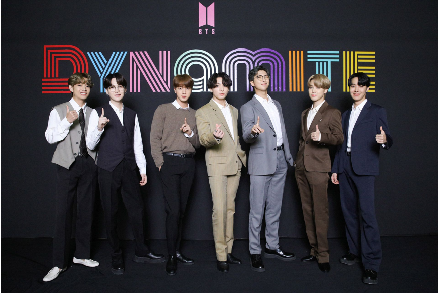
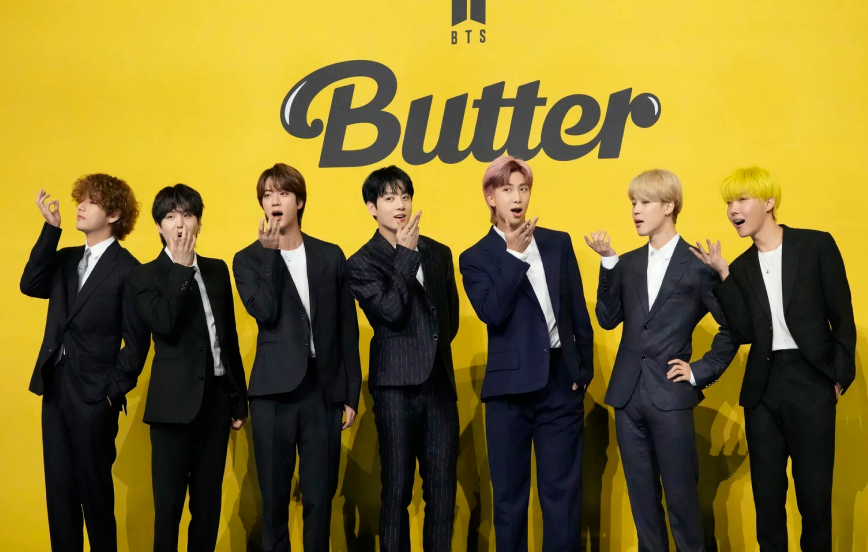

방탄소년단은 새 앨범과 수록곡으로 각각 빌보드 양대 메인 차트를 동시에 석권하는 진기록도 세웠습니다. ‘라이프 고즈 온’이 타이틀곡으로 담긴 앨범 <비>(BE)는 앨범 차트인 ‘빌보드200’에 데뷔와 동시에 1위에 올랐는데요. 지금까지 ‘핫100’과 ‘빌보드200’에서 진입과 동시에 모두 1위를 한 가수는 미국 팝스타 테일러 스위프트와 방탄소년단뿐입니다.
방탄소년단은 어떻게 이런 성과를 낼 수 있었을까요? 독보적 음악과 퍼포먼스, 팬덤 ‘아미’의 힘 등 다양한 요인이 있겠지만, 저는 그들이 세상에 전한 ‘위로’와 ‘희망’을 꼽고 싶습니다. 그들이 데뷔 초창기 때부터 행동으로 보여준 바로 그 가치인 거죠. ‘핫100’ 1위에 오른 ‘다이너마이트’와 ‘라이프 고즈 온’은 모두 코로나19 시대를 사는 이들에게 전하는 위로의 메시지를 담은 곡입니다. ‘다이너마이트’가 밝고 경쾌한 톤의 ‘힐링송’이라면, ‘라이프 고즈 온’은 서정적인 분위기로 ‘그럼에도 삶은 계속된다’는 메시지를 전합니다.


미국 시사주간지 <타임>의 평가도 크게 다르지 않습니다. <타임>은 10일(현지시각) 방탄소년단을 ‘올해의 연예인’으로 선정하며, 그 이유를 이렇게 들었습니다. “그들은 고통과 냉소가 가득한 시기에 친절, 연결, 포용이라는 메시지에 충실했고, 팬덤은 이들의 긍정 메시지를 세계로 전파했다.” 이제 시선은 미국 최고 권위의 대중음악 시상식인 ‘그래미상’으로 쏠립니다. 방탄소년단은 ‘다이너마이트’로 ‘베스트 팝 듀오/그룹 퍼포먼스’ 부문 후보에 올라 있습니다. 한국 대중음악인이 이 시상식 후보에 오른 것 역시 방탄소년단이 처음입니다. 시상식은 다음달 31일 열리는데 여러 전문가가 이들의 수상을 점치고 있습니다.
물론 한편에서는 방탄소년단이 그래미의 벽을 넘기는 쉽지 않을 거라는 전망도 나옵니다. 변화에 둔감하고 나이 든 백인 남성 중심의 보수적인 시상식이란 이유에서입니다. 다만, 한 가지 확실한 건 있습니다. 그래미는 그래미일 뿐이라는 사실입니다. 그래미 수상 여부와 관계없이, 그들의 노래로 위로받은 이들에게 방탄소년단은 이미 ‘최고의 스타’니까요.